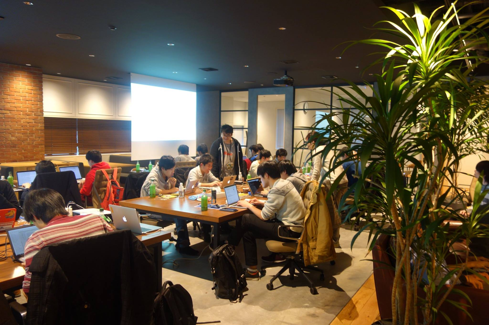

今回も絶好のgit challenge日和のなかの第5回大会は、協議開始前に少々お待たせいたしましたが、無事終了。問題に悪戦苦闘しながらも、参加者全員が集中力を切らさず、取り組んでいらっしゃいました。

今回も晴れで、絶好のgit challenge日和となりました。続々とご来場いただいております。#mixi_git pic.twitter.com/YXsFAEgwO5
— ミクシィグループ 新卒採用公式アカウント (@HR_mixi) January 28, 2017
キーノートはじまりました。#mixi_git pic.twitter.com/zosAOg4cyz
— ミクシィグループ 新卒採用公式アカウント (@HR_mixi) January 28, 2017
今回のランチは「節分」も近いので、巻き寿司にしました。まもなく協議開始です。 #mixi_git pic.twitter.com/8by6B9VZGA
— ミクシィグループ 新卒採用公式アカウント (@HR_mixi) January 28, 2017
競技開始しました。皆さん、頑張ってください！ #mixi_git pic.twitter.com/OLC3ANL3Em
— ミクシィグループ 新卒採用公式アカウント (@HR_mixi) January 28, 2017
git challengeの今回のおやつは、「節分」にちなんで豆菓子をご用意しました。甘いものからしょっぱいものまで、バリエーション豊富です。中盤戦も頑張ってください！ #mixi_git pic.twitter.com/TCTFExLTG7
— ミクシィグループ 新卒採用公式アカウント (@HR_mixi) January 28, 2017
競技終了、お疲れ様でした。只今、エンジニア社員による問題解説中です。 #mixi_git pic.twitter.com/BG0QuG7w5A
— ミクシィグループ 新卒採用公式アカウント (@HR_mixi) January 28, 2017